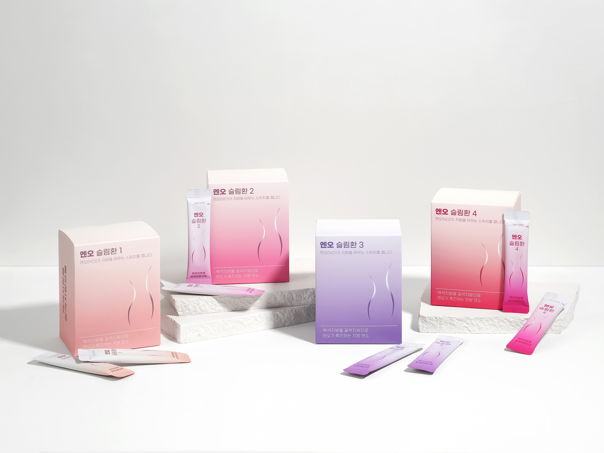
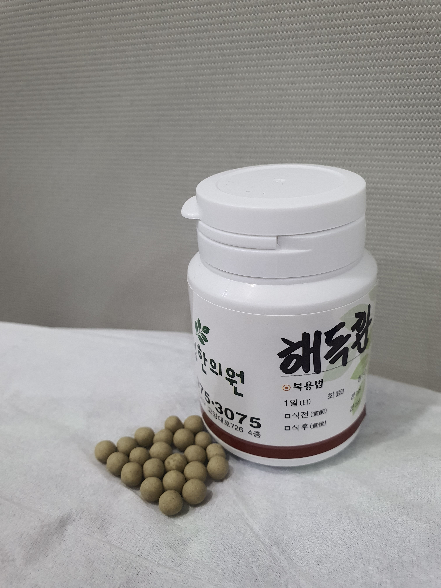

건강 상태 점검
현재 증상과 병력, 복용 중인 약, 이전 체중관리 경험을 확인합니다.
무리하게 굶는 방식보다 현재의 건강 상태, 식습관, 생활 리듬을 함께 살피는 체중관리. 우성한의원은 상담과 진찰을 바탕으로 개인별 관리 방향과 한약 처방의 적합성을 검토합니다.
한약 처방 및 체중 변화는 개인의 상태에 따라 달라지며, 특정 감량 결과를 보장하지 않습니다.
체중 변화에는 식사량뿐 아니라 수면, 활동량, 복용 중인 약, 건강 상태 등 여러 요인이 영향을 미칩니다.
현재 증상과 병력, 복용 중인 약, 이전 체중관리 경험을 확인합니다.
생활 패턴을 고려해 식사와 활동량을 조정할 수 있는 방법을 함께 상의합니다.
체중뿐 아니라 불편 증상, 수면, 식사 패턴 등을 살피며 관리 계획을 조정합니다.
우성한의원에서 안내하는 다이어트 한약 프로그램입니다. 적합성 및 처방 내용은 진료 후 결정됩니다.

한약 복용을 고려할 때에는 기존 질환, 복용 중인 약, 수면 상태, 두근거림 등의 증상과 과거 부작용 경험을 함께 확인하는 것이 중요합니다.
| 1개월분 | 150,000원 |
|---|---|
| 3개월분 | 450,000원 |
엔오슬림환은 체내 산화질소(NO) 생성을 촉진하여 신진대사를 높이고 백색지방을 갈색지방으로 바꿔줍니다.
다이어트와 혈액순환, 만성 염증 치료에 탁월한 산화질소의 효능을 확인해 보세요.
해독환의 복용 필요성과 주의사항을 개인의 건강 상태에 맞춰 상담합니다.
식사 패턴이 달라지면 배변 습관에도 변화가 생길 수 있습니다. 변비나 설사가 있다면 원인과 동반 증상을 먼저 확인해야 합니다. 해독환의 복용 필요 여부와 방법은 진찰 후 결정합니다.

엔오슬림환의 효과를 높이고 요요를 방지하기 위해 일상에서 꼭 지켜주셔야 할 기본 원칙입니다.
저지방·저탄수화물·고단백(살코기, 두부 등) 식단을 유지합니다. 저녁은 소식하고 취침 4시간 전 금식하여 수면 중 공복 상태를 유지하는 것이 감량의 핵심입니다. 식사는 20분 이상 천천히 꼭꼭 씹어 드세요.
노폐물 배출을 위해 갈증이 없을 정도로 물을 충분히 마십니다. 무리한 운동보다는 하루 1시간 빠르게 걷기나 계단 이용을 생활화하고, 하루 8시간 정도 충분한 수면을 취하세요.
심한 두근거림이나 불면이 있다면 복용 단계를 낮추거나 양을 줄이세요. 식사량이 줄어 변비가 생길 수 있으니 생야채와 유산균을 챙겨 드세요. 감량 후 1kg당 1개월의 유지 기간을 가져야 요요를 예방할 수 있습니다.
개인별 건강 상태와 생활습관을 고려해 준비기부터 유지기까지 단계별로 상담합니다.
식사·수면·활동 패턴과 건강 상태를 점검하고 관리 목표를 상담합니다.
식사와 활동 계획을 실천하며 필요 시 처방의 적합성을 평가합니다.
변화된 체중과 생활 패턴을 점검하고 장기적인 관리 방법을 상담합니다.
체중관리는 식사·활동·수면 등 생활습관 관리가 기본입니다. 진찰 결과에 따라 한약 외에 약침 또는 침 치료를 보조적인 진료 방법으로 검토할 수 있습니다.
약침은 한약재 등에서 유래한 약액을 경혈 등에 주입하는 한의 치료입니다. 체중관리 과정에서 약침 적용을 고려하는 경우, 진찰을 통해 적합성과 주의사항을 먼저 확인합니다.
특정 부위의 지방이 약침만으로 선택적으로 감소하거나 체중이 반드시 줄어드는 것은 아닙니다. 효과에 관한 근거는 치료 종류에 따라 제한적일 수 있습니다.
침 치료는 경혈에 침 자극을 가하는 한의 치료입니다. 체중관리와 관련해 활용 가능성을 상담할 수 있으나, 침 치료만으로 일정한 감량 효과가 보장되지는 않습니다.
침 치료는 생활습관 개선을 대체하지 않으며, 체중관리 계획의 일부로 필요 여부를 판단합니다.
우성한의원은 상담과 진찰을 바탕으로 각 치료의 필요성, 예상되는 이점과 위험, 비용을 안내하고 환자와 치료 방향을 상의합니다. 특정 감량 수치나 결과를 약속하지 않습니다.
비만약침·침 치료 문의하기진료 전 확인하면 도움이 되는 내용을 모았습니다.
아닙니다. 기존 질환, 복용 중인 약, 임신·수유 여부, 심혈관계 증상 등을 확인한 뒤 의료진이 처방 적합성을 판단합니다.
지속 가능한 체중관리를 위해서는 식사 패턴, 활동량, 수면 등 생활습관을 함께 관리하는 가장 중요합니다. 개인별 목표와 건강 상태에 맞춰 상담합니다.
두근거림, 불면, 손떨림, 소화불편 등 이상 반응이 발생하면 복용을 중단하고 처방 의료진에게 즉시 상담하세요. 호흡곤란이나 심한 흉통 등 응급 증상은 즉시 응급진료를 받으세요.
비대면 진료 가능 여부와 처방·조제·수령 방식은 현행 제도, 환자 조건 및 의료진 판단에 따라 달라질 수 있으므로 전화로 먼저 확인해 주세요.
현재 복용 중인 약과 건강기능식품, 기존 질환, 이전 다이어트 경험, 최근 체중 변화 등을 정리해 오시면 상담에 도움이 됩니다.
진찰 후 건강 상태와 치료 적합성을 확인하여 병행 여부를 판단합니다. 모든 환자에게 두 치료가 필요한 것은 아니며, 부작용 가능성과 비용 등을 상담한 후 결정합니다.
특정 감량 결과를 보장할 수 없습니다. 체중관리는 식사·활동·수면 등 생활습관 관리가 기본이며, 약침과 침 치료의 효과는 치료 종류와 개인 상태에 따라 다르고 근거가 제한적일 수 있습니다.
휴진·단축진료 일정은 변동될 수 있으므로 방문 전에 확인해 주세요.
비대면 진료 가능 여부, 처방 적합성, 진료시간을 먼저 문의해 주세요.